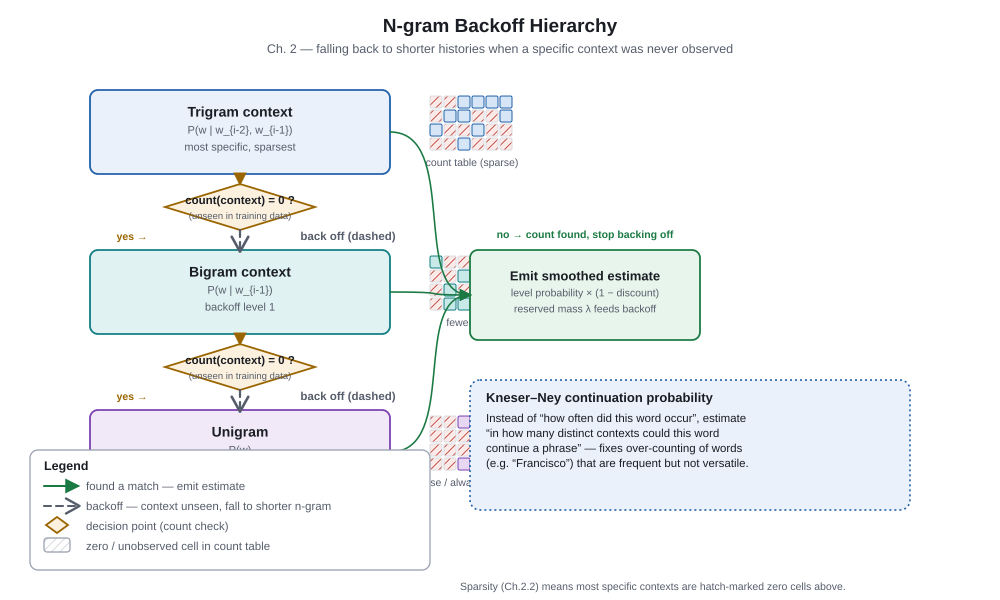
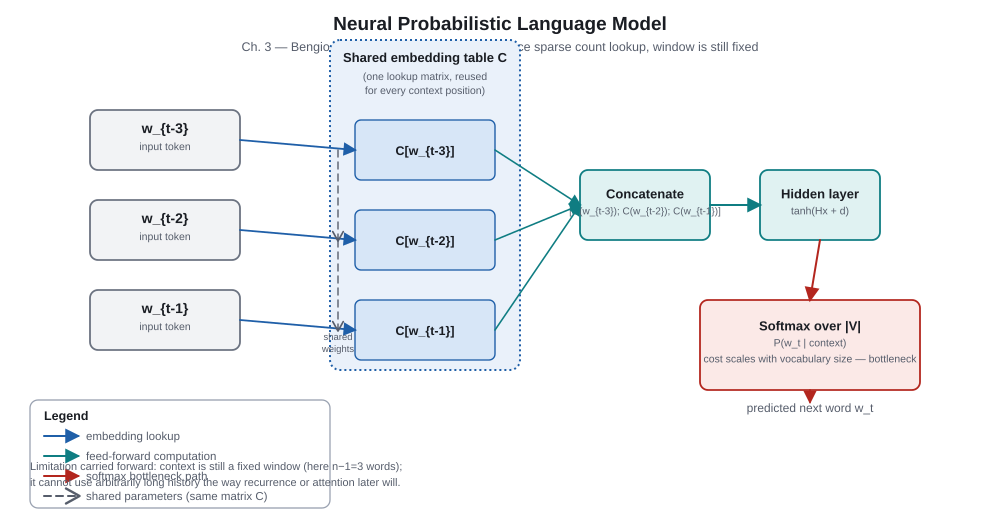

Part 1 of 6
Foundations: from probability to representations
These chapters build the vocabulary for every later architecture. Follow the recurring pattern: a model removes one limitation—sparse counts or rigid symbols—while exposing another—fixed context, expensive output layers, or missing context sensitivity.
Information theory · 1948–
Chapter 1. Foundations
Why this mattered
Language modeling turns an open-ended generation problem into a sequence of conditional probability predictions. The chain rule provides an exact target, and cross-entropy says how to train and compare models against observed text. This framing remains unchanged from n-grams to modern decoder-only models; architecture changes how the conditional distribution is represented and computed. PDF pp. 2–5.
Key takeaways
- A language model assigns a probability to a token sequence by multiplying next-token conditionals.
- Negative log-likelihood and cross-entropy reward probability placed on the observed next token.
- Perplexity is an exponential form of average loss, useful only when tokenization and evaluation data match.
- Sampling changes how a learned distribution is used; it does not change the trained model.
Core explanation
For tokens x1 … xT, the chain rule writes P(x1:T) = ∏t=1T P(xt | x<t). Training usually minimizes the average −log P of the actual next token. A model that is confidently wrong is penalized much more than one that is uncertain, which makes this a useful proper scoring rule.
H = −(1/T) Σt log Pθ(xt | x<t)Lower cross-entropy means less surprise per token; perplexity = exp(H) when natural logarithms are used.
At generation time, logits become probabilities through softmax. Temperature rescales logits before softmax: lower temperature concentrates mass, while higher temperature spreads it. Top-k keeps only a fixed number of candidates; nucleus (top-p) keeps the smallest set whose cumulative probability reaches p. These are decoding policies, not claims that the discarded tokens were impossible.
Going deeper: cross-entropy, KL divergence, and bits
If the data distribution is p and the model is q, cross-entropy is H(p, q) = H(p) + KL(p || q). Since the entropy of the data does not depend on the model, minimizing cross-entropy minimizes the nonnegative KL divergence. Divide a natural-log loss by ln 2 to report bits per token; for raw byte streams, bits per byte avoids tokenizer-dependent units.
Checkpoint
- What quantity is multiplied in the chain-rule factorization?
Reveal answer
Each factor is the probability of the next token conditioned on all previous tokens. - Why can two perplexity numbers be incomparable?
Reveal answer
Different tokenizations or evaluation distributions change the unit and difficulty of prediction. - Does temperature alter the learned conditional distribution?
Reveal answer
No. It alters the sampling distribution used after the model produces logits.
Statistical era · 1980s–2000s
Chapter 2. Statistical Language Models
Why this mattered
N-gram models made the next-token objective practical: replace the entire history with the most recent n−1 tokens and estimate conditional probabilities from counts. They established durable ideas—smoothing, interpolation, held-out evaluation, and backoff—while making sparsity painfully concrete. Their failure to share statistical strength between similar contexts motivated learned representations. PDF pp. 5–7.
Key takeaways
- An n-gram is a Markov approximation, not the chain rule itself.
- Exact context counts are sparse; unseen events are inevitable in finite data.
- Smoothing reallocates probability mass from seen events to possible unseen ones.
- Backoff uses a shorter history when a longer one is unreliable; interpolation blends several histories.
Core explanation
A trigram approximates P(wt | w<t) with P(wt | wt−2, wt−1). Count estimates work for frequent phrases but make unrelated contexts completely separate rows in a table. A five-word history may be highly informative, yet most five-word histories have few or no observations. The central design trade-off is therefore specificity versus reliable estimates.

Discounting deliberately lowers probabilities assigned to observed counts. Kneser–Ney smoothing then gives an unseen continuation more weight when it follows many different contexts, rather than merely when it is globally common. That continuation idea distinguishes a word such as “Francisco,” which follows relatively few contexts, from a broadly reusable word such as “the.”
Going deeper: interpolation as a mixture
An interpolated model can use λ3P(wt|wt−2,wt−1) + λ2P(wt|wt−1) + λ1P(wt), with nonnegative weights summing to one. In practice, weights may depend on how much evidence the longer context has. This makes the model robust instead of treating every observed count as equally trustworthy.
Checkpoint
- What assumption turns the full history into an n-gram context?
Reveal answer
The Markov assumption: only the last n−1 tokens are retained. - Why is an unsmoothed model unusable for generation?
Reveal answer
It assigns zero probability to unseen events, causing zero probability for any sequence containing one. - What does Kneser–Ney continuation probability try to capture?
Reveal answer
How diverse the contexts are in which a continuation appears, not only its raw frequency.
Neural representations · 2003
Chapter 3. Neural Probabilistic Language Models
Why this mattered
Bengio and colleagues replaced one-hot context lookup with learned dense vectors and a shared neural predictor. Similar words could now produce similar hidden states, allowing evidence from one context to help another. This was a decisive answer to n-gram sparsity, although the model still saw a fixed window and paid heavily for a full-vocabulary softmax. PDF pp. 8–9.
Key takeaways
- An embedding table maps a discrete token ID to a continuous vector.
- A shared hidden network generalizes across contexts that have related embeddings.
- The output softmax normalizes scores over every vocabulary item.
- Fixed-window context and output-layer cost remained important bottlenecks.
Core explanation
For a context of several words, a neural probabilistic LM looks up each embedding, concatenates or combines those vectors, sends them through a nonlinear hidden layer, and scores candidate next words. Learning adjusts both the embeddings and predictor so that configurations useful for prediction become nearby in representation space. Unlike a count table, the same parameters are reused for every context.

The output layer computes one score per vocabulary word and uses softmax to make them sum to one. That is statistically clean but can dominate computation as the vocabulary grows. Later methods approximate or restructure this step, but the architecture’s larger lesson is that continuous representations can smooth the discrete world without manually enumerating every resemblance.
Going deeper: why softmax is a bottleneck
Given a hidden vector h, the model forms scores sv = Wvh + bv for each vocabulary item v, then computes exp(sv) / Σu exp(su). Both the denominator and gradient touch the whole vocabulary in the basic formulation. Hierarchical softmax, sampling objectives, and adaptive softmax are different ways to reduce that cost.
Checkpoint
- How does an embedding help sparse contexts?
Reveal answer
It lets contexts share parameters through continuous vectors, so similar inputs can receive related predictions. - Which two constraints survived the NPLM transition?
Reveal answer
Its context window was bounded, and its full softmax was expensive for large vocabularies. - Is a token embedding itself a context-sensitive meaning?
Reveal answer
No. It is one learned vector per token type in this model; contextual meaning arrives in later sequence models.
Distributional semantics · 2013–
Chapter 4. Word Embeddings
Why this mattered
Word embedding methods made useful distributional representations inexpensive to learn from broad text. Their geometry revealed semantic and syntactic regularities and became reusable input features for many NLP systems. But one vector per word cannot distinguish a word’s role in different sentences, so embeddings are a bridge—not an endpoint—to contextual sequence models. PDF pp. 10–12.
Key takeaways
- Distributional learning uses co-occurrence to place related words near one another.
- CBOW predicts a center word from its neighbors; Skip-gram predicts neighbors from a center word.
- Negative sampling replaces an expensive normalized vocabulary prediction with contrastive binary decisions.
- Subword units give rare words shared pieces and reduce out-of-vocabulary failure.
- Static embeddings assign one representation to every sense of a word.
Core explanation
“You shall know a word by the company it keeps” becomes an optimization objective: words with similar local contexts should receive vectors that support similar predictions. Skip-gram reverses the direction used by CBOW, but both create a learning signal from windows of text. Vector arithmetic can expose regularities because a direction may capture a recurring relation, though such examples are diagnostic illustrations rather than a proof that language is linear algebra.
| Method | Input | Prediction | Useful trade-off |
|---|---|---|---|
| CBOW | Context words | Center word | Aggregates context efficiently |
| Skip-gram | Center word | Nearby words | Direct word-to-context associations |
| Negative sampling | Observed pair plus noise pairs | Real versus sampled association | Avoids full-vocabulary normalization per pair |
Subword tokenization decomposes a surface word into smaller units, so an unfamiliar word can still be represented from familiar fragments. This improves robustness but is not the same as understanding morphology or resolving meaning from sentence context. Contextual encoders and autoregressive models later make each token occurrence depend on its neighbors.
Going deeper: negative sampling intuition
Instead of calculating a normalized probability for every vocabulary item, negative sampling trains a classifier to score observed (word, context) pairs above randomly sampled noise pairs. It is therefore an efficient surrogate objective, not exactly the same likelihood as a full softmax language model. The noise distribution is deliberately chosen rather than identical to raw token frequency.
Checkpoint
- What signal makes two words close in a distributional embedding space?
Reveal answer
They appear in similar contexts and therefore support similar context-prediction objectives. - What cost does negative sampling avoid?
Reveal answer
The cost of normalizing scores across the full vocabulary for each training pair. - Why is a static vector insufficient for polysemy?
Reveal answer
It gives all occurrences of a token type the same representation regardless of surrounding context.